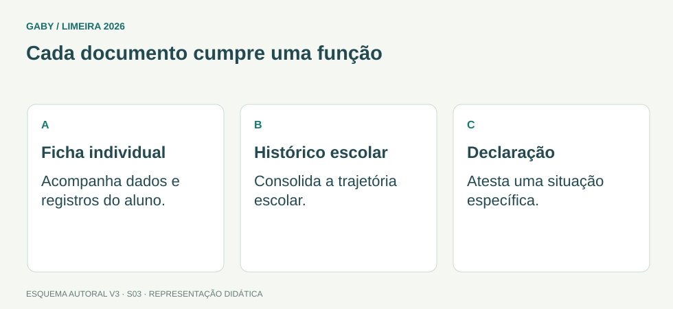

Objetivos do módulo
- Diferenciar ficha individual, histórico escolar, guia de transferência e registros de servidores.
- Identificar informações essenciais e função de cada documento.
- Aplicar conferência antes da expedição.
- Evitar inconsistências de identidade, resultados e trajetória escolar.
Cada documento cumpre uma função

Descrição em texto do esquema
- Ficha individual: Acompanha dados e registros do aluno.
- Histórico escolar: Consolida a trajetória escolar.
- Declaração: Atesta uma situação específica.
Oficina visual · aplique o esquema
Uma família pede comprovação de matrícula atual; outra pede comprovação dos estudos já realizados. Qual documento atende a cada finalidade, em regra?
Atividade autoral complementar da V3. Registre sua resposta; a resolução está no arquivo de gabarito e revisão.
Mapa do conteúdo
1. Registros individuais
Registros individuais concentram informações relativas a uma pessoa específica. No caso do aluno, acompanham identificação e trajetória escolar; no caso do funcionário, registram dados funcionais conforme normas da rede.
O edital cita expressamente guia de transferência, ficha individual do aluno e do funcionário e histórico escolar. Portanto, a banca pode perguntar finalidade, conteúdo e procedimentos de conferência.
2. Ficha individual do aluno
A ficha individual reúne informações escolares de determinado período ou trajetória, conforme modelo adotado: identificação, matrícula, componente curricular, resultados, frequência e outras ocorrências pertinentes.
Ela deve manter coerência com atas, sistemas e documentos que alimentam o histórico escolar.
3. Histórico escolar
O histórico escolar sintetiza a trajetória acadêmica oficial do aluno e pode ser utilizado para comprovar estudos realizados. Erros nele podem dificultar matrícula, transferência ou continuidade dos estudos.
Antes da emissão, confira identificação civil, escola, etapas/anos/séries, componentes, resultados, carga horária e observações exigidas pelas normas do sistema.
4. Guia ou documento de transferência
A transferência permite continuidade da vida escolar em outra unidade. O documento precisa fornecer informações suficientes para que a escola de destino receba e posicione corretamente o aluno, conforme regras do sistema.
Prazos, formulários e documentos exatos podem variar pela rede, por isso o servidor deve observar normas locais além da legislação geral.
5. Ficha do funcionário e proteção de dados
Registros de servidores e funcionários contêm dados pessoais e funcionais. Devem ser atualizados, acessados apenas por pessoas autorizadas e conservados de forma segura.
O princípio é o mesmo: finalidade administrativa, integridade, confidencialidade e rastreabilidade.
Exemplos resolvidos passo a passo
Exemplo 1
Situação: Histórico apresenta sobrenome diferente do documento de identificação.
Exemplo 2
Situação: Aluno solicita transferência durante o período letivo.
Exemplo 3
Situação: Pessoa sem relação com a escola pede dados funcionais completos de um servidor.
Pegadinhas e erros frequentes
- Confundir ficha individual com histórico escolar.
- Expedir documento sem conferir identificação.
- Imaginar que transferência “apaga” registros da escola de origem.
- Divulgar dados funcionais sem necessidade/autorização.
- Usar modelos antigos sem verificar normas atuais.
Resumo de prova
- Ficha individual registra dados do aluno conforme período/modelo da rede.
- Histórico comprova trajetória escolar oficial.
- Transferência deve preservar continuidade dos estudos.
- Registros do funcionário também exigem integridade e sigilo.
- Todo documento expedido deve ser conferido.
Exercícios do módulo
Resolva sem consultar o arquivo de gabarito. As questões são autorais e construídas para treinar os conceitos do edital.
- registrar somente recados
- funcionar como agenda
- comprovar a trajetória escolar do aluno
- substituir documento de identidade
- consultar somente o aluno
- conferir identificação e registros escolares
- apenas imprimir o que o sistema mostrar sem revisão
- retirar informações divergentes sem apuração
- preservar a continuidade da vida escolar
- eliminar registros anteriores
- ser feita sem documentação
- impedir matrícula futura
- é sempre idêntica ao histórico em função e conteúdo
- serve somente para funcionários
- não pode conter resultados
- reúne informações escolares individualizadas
- podem ser enviados a qualquer solicitante
- não exigem segurança
- devem ser protegidos e acessados conforme necessidade e autorização
- são sempre públicos em sua totalidade
- alterar sem registro
- verificar fonte oficial e regularizar
- escolher a grafia mais curta
- ignorar
- mantém seus registros conforme normas de arquivo
- deve destruir tudo imediatamente
- não precisa registrar a saída
- pode alterar notas livremente
- ser irrelevante
- ser corrigido verbalmente
- ser substituído por um recado
- prejudicar continuidade dos estudos e exigir retificação
- ponto do servidor
- inventário patrimonial
- mudança de unidade escolar
- controle de estoque
- copiar sem verificar
- comparar informações em fontes relacionadas
- ler apenas um campo
- usar memória
Quando terminar, abra Secretário de Escola 03 - Registros Individuais, Ficha e Histórico Escolar - Gabarito e Revisão.
Checklist de domínio
- ☐ Diferenciar ficha individual, histórico escolar, guia de transferência e registros de servidores.
- ☐ Identificar informações essenciais e função de cada documento.
- ☐ Aplicar conferência antes da expedição.
- ☐ Evitar inconsistências de identidade, resultados e trajetória escolar.
Meta do módulo: 80% ou mais nas questões, sem depender de consulta.
Referências e conteúdos auxiliares
- Brasil — Lei 9.394/1996, LDB, texto compiladoOrganização da educação, incumbências escolares, avaliação, frequência e documentação.
- Conarq — Criação e desenvolvimento de arquivos públicos municipaisConsulte especialmente gestão de documentos, protocolo, classificação, avaliação e destinação.
Referências externas de apoio consultadas para a V3 em 27/09/2026. A origem das questões é o material autoral do projeto; estes links não indicam que uma instituição publicou ou validou os exercícios. As páginas externas precisam de internet. Em informática, confira a versão do programa; em legislação, observe o recorte e as regras de atualização do edital.